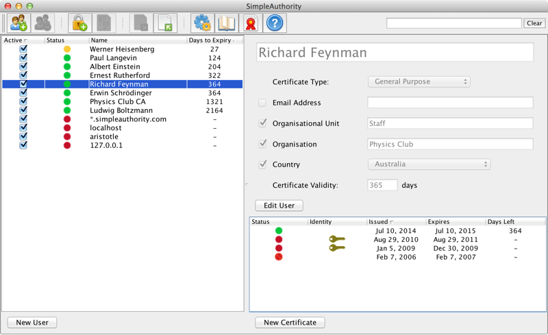

Getting Started
The main window
The main window provides an overview of the users in your organisation and the status of their certificates.
- Users are listed on the left-hand side. These are the people or computer servers that use keys and certificates.
- The top right-hand side contains information about the selected user. These details are included in any new certificates that are generated for that user.
- The bottom right-hand side lists certificates that have been issued to the selected user.
- The coloured circles represent the validity status of issued certificates.

Generating keys and certificates
To generate keys and certificates:
- Generate a Certification Authority (CA) - The CA is used to generate certificates for users. Normally you would only generate a new CA once for your organisation.
- Generate one or more users - Each user represents a person or computer server that needs keys and certificates.
-
Generate certificates - When you generate a certificate (
.cer) file you also generate a corresponding identity (.p12) file. The identity file is password protected and includes the private key as well as the certificate. - Distribute keys and certificates - The identity file and password must be sent to the user securely, because together they protect the private key. The best way to protect the private key is to send these components separately, e.g. email the identity file and SMS the password. The certificate is not sensitive so this file can be freely distributed.
File types
- PKCS#12 identity files (
.p12or.pfx) include both the user certificate and private key, and usually also the CA certificate. These files are protected (encrypted) by a password. - DER-encoded certificate files (
.ceror.crt) include a single certificate only. - PKCS#7 certificate files (
.p7bor.p7c) include one or more certificates, often a user and the CA certificate. - PEM files (usually
.pem) contain either a certificate or a private key. These files include printable characters only and most of the file is base-64 encoded. Private key PEM files may or may not be protected by a password.
Using keys and certificates
To configure an application for key and certificate use:
- Import the user identity file into the application (or Operating System) key store. This requires entry of the password.
- Import the CA certificate into the application (or Operating System) trusted CA key store, so that all certificates issued by this CA are automatically trusted.
- (If necessary) Configure the application to choose the key and certificate to use.
When using keys and certificates in a security application:
- Your private key, from your identity file, is used for digital signing of emails, documents, etc., or for authentication using VPN, SSL, etc.
- Other people's certificates are used to encrypt data to them.
- Digital signatures are verified using the certificate of the person that created the signature. Note that the signing certificate is almost always automatically included in the signed email/document to make it available for this purpose.
- Your private key, from your identity file, is used to decrypt information that has been sent to you.
See Using Certificates for more details.